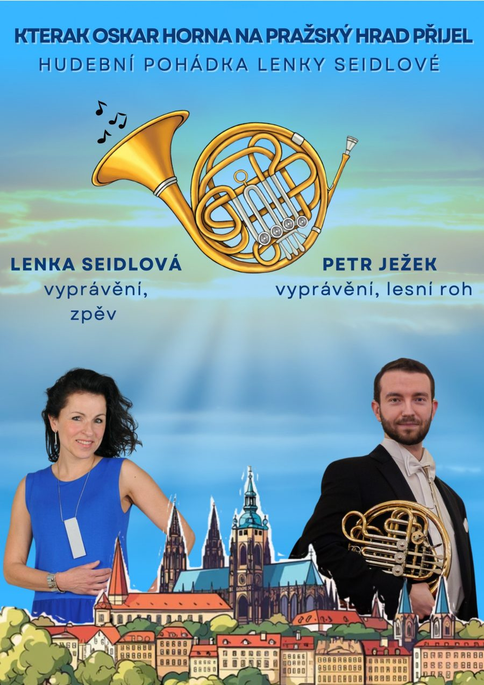

Hudební pohádky → Kterak Oskar Horna na Pražský hrad přijel

Kterak Oskar Horna na Pražský hrad přijel
Pohádka o Oskarovi, který se vydá až na Pražský hrad, děti seznámí s dechovým nástrojem zvaným lesní roh (horna). Zazní ukázky z děl W. A. Mozarta, Bedřicha Smetany i G. F. Händela a děti si zazpívají známé písničky.
Účinkující
- Lenka Seidlová: vyprávění, zpěv
- Petr Ježek: lesní roh a vyprávění
Délka představení: 30–45 minut, dle věku a nálady malých posluchačů. Vhodné pro malé i větší posluchače, kteří mají rádi příběhy a hudbu.
Mám zájem o tuto pohádku